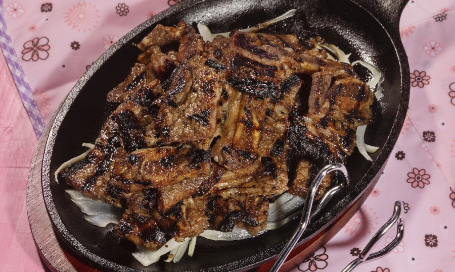

Korean BBQ Kalbi

Description:
Sweet and savory bbq short ribs. Marinade created by Chef Roy Choi
Prep time: 30 minutes
Cook time: 30 minutes
Ingredients:
- 1 small onion, coarsely chopped
- 4 green onions, coarsely chopped
- 3/4 cups peeled garlic cloves
- 4-6 kiwi's peeled
- 1 cup soy sauce
- 1 cup fresh orange juice
- 1/2 cup mirin
- 1/2 cup toasted sesame oil
- 1/4 cup sugar
- 2 tbsp toasted sesame seeds
- 3-4 lbs of thinly sliced bone-in short ribs
- vegetable oil for brushing grill
Steps:
- Blend all ingredients listed above except the short ribs and vegetable oil until smooth
- Rinse short ribs to get rid of any bone fragments from the butcher
- Transfer short ribs into a bowl, and pour the marinade into the bowl, cover air tight and refrigerate overnight
- 30 minutes to 1 hr before cooking, let the short ribs get to room temperature
- Heat up the grill and brush with vegetable oil
- Grill over medium high to high heat and brown each side nicely--about 2-4 minutes per side
- Cut short ribs into threes and enjoy with your hands